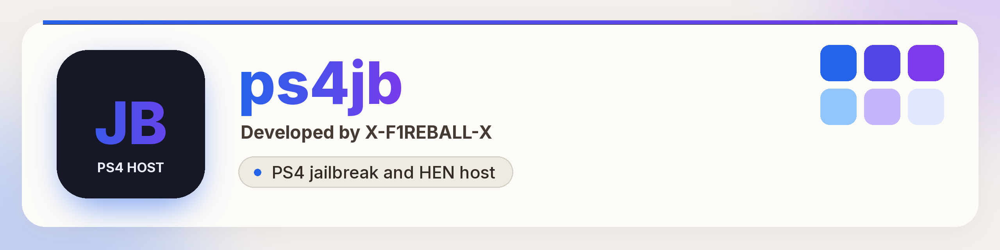

ps4jb is a PS4 jailbreak and HEN host that runs in the PS4 Internet Browser. It picks a jailbreak chain from your firmware. Coverage 6.00–12.02 and 12.50–13.52, proven on 13.02, 13.04, 13.50 and 13.52.
Live host: https://x-f1reball-x.github.io/ps4jb/
Open the hostSource on GitHubOptional but recommended. DNS by Nomadic blocks official system updates.
62.210.38.117https://x-f1reball-x.github.io/ps4jb/Cache ready, then the jailbreak starts by itself.To override the automatic choice, add ?chain= with cssfontface, psfree, slopkit or relapse.
| Firmware | Chain | Status |
|---|---|---|
| 13.02, 13.04, 13.50, 13.52 | Slopkit Relapse | Works |
| 12.50 - 13.00 | Slopkit Netctrl | Auto (untested here) |
| 11.03 - 12.02 | Slopkit Lapse | Auto (untested here) |
| 7.00 - 11.02 | CSSFontFace + Lapse | Auto (untested here) |
| 7.00 - 9.60 | PSFree + Lapse | ?chain=psfree (untested) |
| 6.70 - 6.72 | BadHoist | Entry page (limited) |
| 6.00 - 6.69 | CSSFontFace + Lapse | Auto (untested here) |
Payloads included: hen.bin, goldhen.bin, ps4debug.bin.
Sleirsgoevy (BadHoist), TheFloW (NetControl / poops base), Nathan Fargo (CSSFontFace), abc (PSFree), SpecterDev / ChendoChap (Lapse), jordyidk (Slopkit), raw13g (Relapse / 13.xx offsets), B4411M (offsets and patches), SiSTR0 (GoldHEN / HEN), zecoxao (firmware dumps), Yenyen (offsets / research), EchoStretch (hosts / tools), Nomadic (update-blocking DNS).